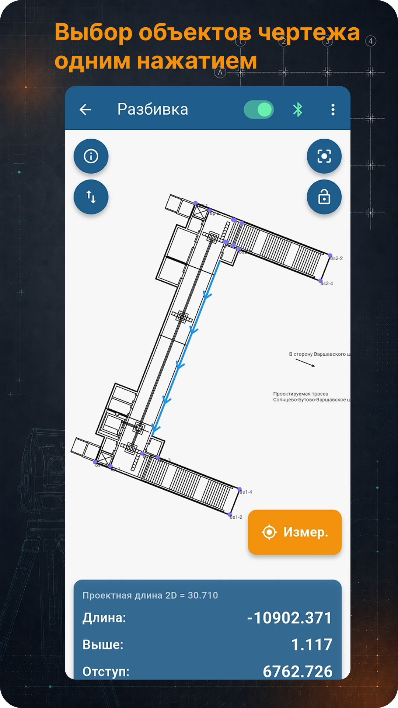

TS Go!
Тахеометр, проект, DXF, разбивка, съёмка и контроль положения точки относительно проекта.
Полевые приложения
Android-приложения для геодезии и строительства: тахеометр, нивелир, проект, разбивка, съёмка, вынос в натуру, высотные отметки и полевые расчёты.
Тахеометр, проект, DXF, разбивка, съёмка и контроль положения точки относительно проекта.
Реперы, рейка, высота, горизонт прибора, высотные отметки, разбивка и съёмка высот.
Продукты
Главная идея — быстро получить понятный результат в поле: измеренная точка, проектная линия, отступ, высота, рейка, проектная отметка, вынос в натуру.
Приложение для работы с тахеометром и проектом. Подключение к прибору, открытие DXF-разбивочника, выбор проектной линии, точки или объекта, съёмка и контроль измеренной точки относительно проекта.

Приложение для работы с оптическим нивелиром на стройке: исходный репер, отсчёт по рейке, горизонт прибора, высота, высотные отметки, разбивка и съёмка.

Документы
Условия использования приложений GeoSystems Studio, оплаты, доступа и обработки данных.